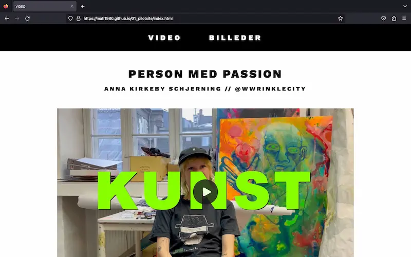
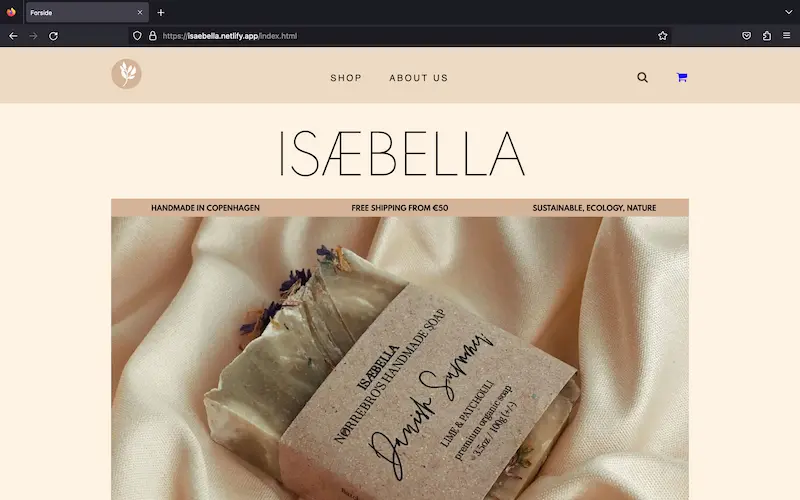

Grundlæggende Indhøld
Tema 5
Videoproduktion
I tema 5 blev jeg introduceret til Adobe programmet Premiere Pro og Audition. Her udviklede jeg færdigheder inden for videoproduktion, som jeg benyttede mig af i fremstillingen af 05.01.01 pilotvideo. Udover faglig læren, blev jeg placeret i en studiegruppe på fire, som jeg skulle arbejde sammen med resten af temaet. Derudover opnåede jeg en baggrundsviden omkring optagelsesteknikker som blandt andet 5-skuds-reglen. I samarbejde med en fra min gruppe optog jeg video- og lydmateriale til pilotvideoen, som jeg senere redigerede i Premiere Pro og lyd- synkroniserede og manipulerede i Audition.
05.01.02 pilotsite
I forlængelse af pilotvideoprojektet fremstillede jeg et pilotsite, hvor jeg indsatte videoen på to måder: via video tagget i HTML og YouTubes embed-metode.
 gø tøGruppearbejde
De efterfølgende uger blev brugt i samarbejde med studiegruppen med det formål, redesigne en hjemmeside. Til dette blev jeg introduceret til GitHub og dets funktioner såsom commit, push og pull. Derudover oprettede vi en gruppekontrakt til forventningsafstemning af hver persons arbejdsmoral samt et Trello board, hvor vi kunne have overblik over opgaveprocessen. Vi havde daglige SCRUM meetings for at checke ind på status og yderligere arbejdsopgaver.
Nuværende website
Til redesign opgaven udvalgte vi virksomheden ISÆBELLA, som er en virksomhed der sælger håndlavet sæbe.
gø tøFor at lægge et fundament for opgaven analyserede vi virksomhedens nuværende site i form af desk research, sitemap, funktionalitetsliste, wireframe, styletile, indholdsoversigt og test. Vi benyttede os af forskellige testmetoder som BERT, observation og tænke-højt test. Jeg påtog mig opgaven at lave sitemap, wireframe og styletile, samt test på folk omkring mig.
Wireframe
BERT test
ISÆBELLA video
Få dage inden vi havde aftalt at interviewe og optage med virksomhedens ejer, sprang hun fra, og vi måtte improvisere. Vi endte med at simulere, at vi fremstillede sæbe, og brugte dette som en “dummy” video. Min opgave var at holde kameraet, og jeg fik benyttet mig af forskellige optageteknikker, blandt andet perspektiv og zoom. Af dette lærte jeg, at der kan ske uventede ting, og at man må være klar på at have en plan b.
Idégenerering
For at blive klar til at redesigne hjemmesiden lavede vi hver 8 hurtige wireframes, og brugte viden fra tema 3 omkring at sætte prik ved de elementer, man synes fungerer ved hinandens wireframes. Herfra var det nemt at fremstille de endelige wireframes, hvilket var min opgave. Derudover lavede vi et styletile, hvor vi i fællesskab blev enige om ting som farver og fonte til sitet.
Kodning
Jeg påtog mig ansvaret om at kode shoppen og produktsiden samt at gøre siden responsiv. Til dette benyttede jeg både HTML, CSS og JavaScript. Derudover blev jeg introduceret til at lave formularer og burgermenu, som jeg ser frem til at arbejde mere med.
05.02.01 redesign og temadokumentation
Som afslutning på redesign opgaven foretog vi nogle afrundende tests på vores site i form af heuristisk test og Lighthouse for at undersøge brugeroplevelsen.
 gø tø